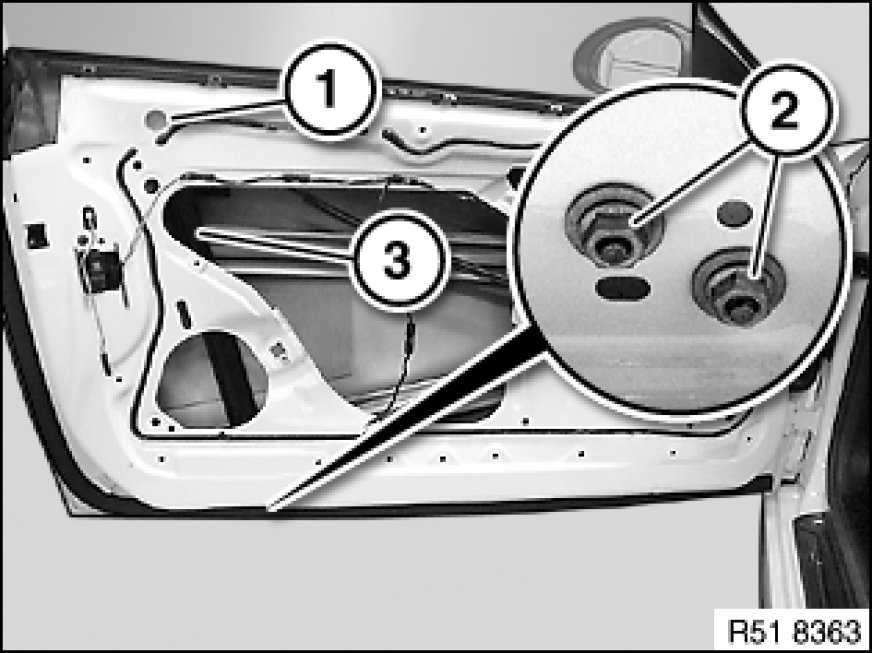
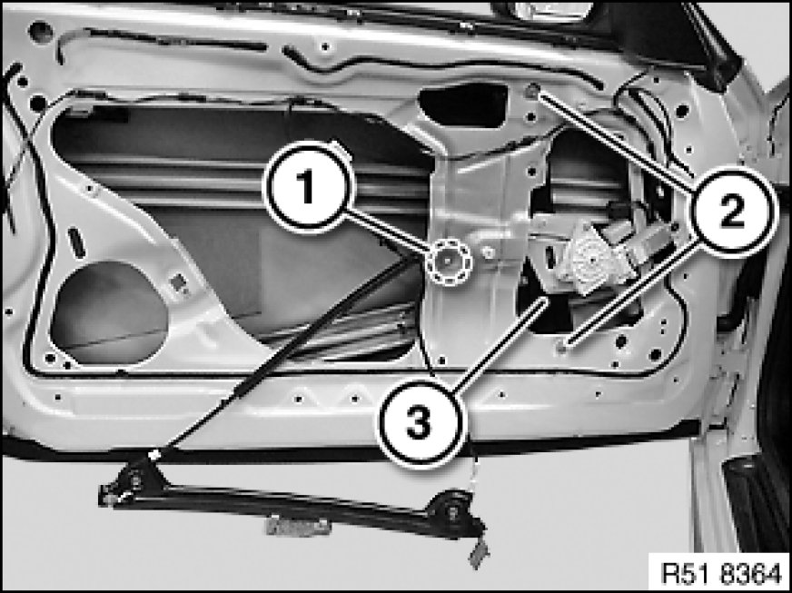

51 33 000 Removing and Installing/Replacing Power Window Unit In Left or Right Front Door
51 33 000 - Removing and installing (replacing) power window unit in left or right front door

Warning!
Risk of injury!
Carry out work on the power window unit only when the power window motor is de-energized.

Necessary preliminary tasks:
- Remove front door window glass Service and Repair

Peel back film (1) and loosen nuts below.
Release nuts (2) and feed out rear section of power window unit (3).
Tightening torque 51 33 1AZ 51 33 Power Windows, Front.
Installation Note:
Replace defective film (1) if necessary.

Loosen window regulator (3) at bracket (1).
Release nuts (2) and completely feed out power window unit (3).
Replacement:
Remove flat motor for power window unit Service and Repair.